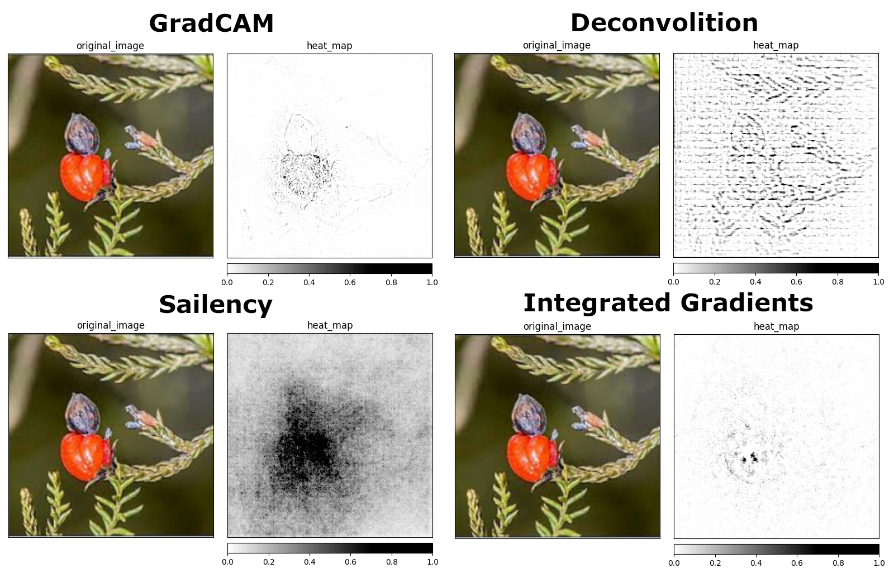

Attribution methods in interpretability of CNNs
Author: Kemal Erdem
Source: "cell" on TwitterAttribution exampleGradCAM attribution, Source: Marvel Heroes DatasetIs that a good attribution?GradCAM attribution, Source: Marvel Heroes DatasetWhat is a problem?
New methods are not validated
We don't know how to compare XAI methods
No one is checking the metrics on real data
The goal?
Compare metrics (different methods, different models, different datasets)
Check if metrics make sense (spoiler... they don't)
Define if we're able to decide which method is better
Different methods different problemsSource: Edible plants datasetMaybe metrics then?Only two metrics available in the most popular XAI library: CaptumUnintuitive intuition behind the Infidelity
$$
\operatorname{INFD}(\Phi, \mathbf{f}, \mathbf{x})=\mathbb{E}_{\mathbf{I} \sim \mu_{\mathrm{I}}}\left[\left(\mathbf{I}^{T} \Phi(\mathbf{f}, \mathbf{x})-(\mathbf{f}(\mathbf{x})-\mathbf{f}(\mathbf{x}-\mathbf{I}))\right)^{2}\right]
$$
$$
\Phi^{*}(\mathbf{f}, \mathbf{x})=\left(\int \mathbf{I I}^{T} d \mu_{\mathbf{I}}\right)^{-1}\left(\int \mathbf{I I}^{T} I G(\mathbf{f}, \mathbf{x}, \mathbf{I}) d \mu_{\mathbf{I}}\right)
$$
$$
\mathrm{IG}(\mathbf{f}, \mathbf{x}, \mathbf{I})=\int_{t=0}^{1} \nabla \mathbf{f}(\mathbf{x}+(t-1) \mathbf{I})
$$
Infidelity calculation, Source: On the (In)fidelity and Sensitivity of ExplanationsActual intuition behind the InfidelitySample infideilty calculations for different noises.Experiments